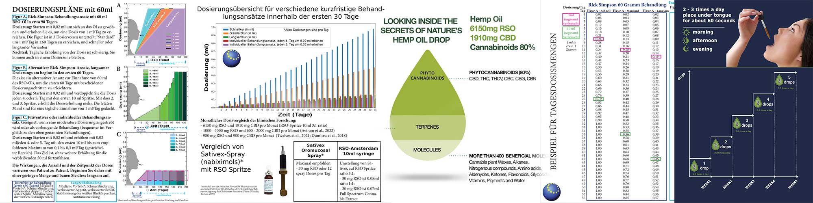

RSO Verwendung des Produkttyps
Wir bieten zwei verschiedene Arten RSO-Produkten mit unterschiedlichen Stärken erhältlich. Zwei aktive Komponenten RSO werden aufgrund ihrer Vorteile häufig verwendet.
RSO ist sehr wirksam gegen Schmerzen, aber in der richtigen Menge. Viele Forschungen im Labor und mit Tierversuchen zeigen positive Langzeiteffekte. Die Hypothese ist, dass die Ergebnisse umso besser sind, je mehr Cannabinoide Ihr Körper zu sich nimmt. Die empfohlene Dosierung bei RSO-Produkten ist jedoch, mit einer geringen Menge zu beginnen und die Tagesdosis schrittweise zu erhöhen, bis die gewünschten Ergebnisse erzielt werden. Dadurch kann Ihr Körper eine Toleranz gegenüber möglichen Nebenwirkungen aufbauen und gleichzeitig die Vorteile der Cannabinoide nutzen. CBD kann die Nebenwirkungen von THC mildern, daher bevorzugen einige Patienten die gleiche Menge an THC und CBD.
RSO Typ I ratio 1:1 (verfügbar in 1, 10, 30 oder 60 gram)
Typ I Komponente wird als geringe bis mittlere Wirkung eingestuft und bei Stress, Schlaf, Chemotherapie (während und danach), Epilepsie, Alzheimer, PTSD, MS und mehr verwendet. Das gleiche Verhältnis der weichen Wirkkomponente ermöglicht es, den Nebenwirkungen der stärkeren Komponente entgegenzuwirken. Eine allmähliche Erhöhung der Dosierung (beginnend mit 0,02 ml) hilft Ihrem Körper, eine Toleranz gegenüber Nebenwirkungen (meistens in Form von Müdigkeit und Schläfrigkeit) aufzubauen. Zum Produkt und DosierungRSO Typ I ratio 1:1 (1ml Spritze für Erstbenutzer)
Typ I Komponente wird als geringe bis mittlere Wirkung eingestuft und bei Stress, Schlaf, Chemotherapie (während und danach), Epilepsie, Alzheimer, PTSD, MS und mehr verwendet. Das gleiche Verhältnis der weichen Wirkkomponente ermöglicht es, den Nebenwirkungen der stärkeren Komponente entgegenzuwirken. Eine allmähliche Erhöhung der Dosierung (beginnend mit 0,02 ml) hilft Ihrem Körper, eine Toleranz gegenüber Nebenwirkungen (meistens in Form von Müdigkeit und Schläfrigkeit) aufzubauen. Zum Produkt und Dosierung
RSO Typ II ratio 3:1 (verfügbar in 1, 10, 30 oder 60 gram)
Typ II Komponente wird als starke RSO-Wirkung eingestuft und häufig bei schwereren Erkrankungen zur Linderung von Schmerzen und Chemotherapie (während und danach) eingesetzt. Der größere Teil des stärkeren Wirkstoffs ist ideal zur Schmerzlinderung, jedoch ist eine schrittweise Erhöhung der Dosierung (beginnend mit 0,02 ml) erforderlich, um Ihrem Körper zu helfen, eine Toleranz für Nebenwirkungen (meistens in Form von Müdigkeit und Schläfrigkeit) aufzubauen ). Zum Produkt und DosierungRSO Typ II ratio 3:1 (1ml syringe für Erstbenutzer)
Typ II Komponente wird als starke RSO-Wirkung eingestuft und häufig bei schwereren Erkrankungen zur Linderung von Schmerzen und Chemotherapie (während und danach) eingesetzt. Der größere Teil des stärkeren Wirkstoffs ist ideal zur Schmerzlinderung, jedoch ist eine schrittweise Erhöhung der Dosierung (beginnend mit 0,02 ml) erforderlich, um Ihrem Körper zu helfen, eine Toleranz für Nebenwirkungen (meistens in Form von Müdigkeit und Schläfrigkeit) aufzubauen ). Zum Produkt und DosierungDosierungsbeispiele für die Kurzzeit- und Langzeitbehandlung finden Sie auf den Produktseiten und auf der Dosierung Seite
Vorläufige klinische Ergebnisse basierend auf Patientenbefragungen
Vorläufige klinische Ergebnisse basierend auf Patientenbefragungen
Die Optimierung des therapeutischen RSO-Einsatzes kann eine Herausforderung sein – sowohl für Ärzte als auch für Patienten. Die meisten Ärzte haben im Medizinstudium nie etwas über RSO erfahren und laut einer Umfrage aus dem Jahr 2017 fühlen sich nur wenige qualifiziert, Patienten über die Dosierung und Anwendung solcher Produkte zu beraten.
Um jedem bei der Suche nach weiteren Informationen zu helfen, haben wir eine eigene klinische Studie durchgeführt, um die Auswirkungen von RSO-Produkten auf verschiedene Gesundheitszustände zu untersuchen. Der Hauptzweck dieser Studie war es, die Auswirkungen der kurz- und langfristigen Anwendung von RSO zu verstehen und zu helfen, zukünftige abgeleitete Produkte zu verbessern.
Die vorläufigen Ergebnisse wurden von 135 Patienten aus 8 verschiedenen europäischen Ländern gewonnen, die ein Bewertungsformular über ihre Anwendung und Erfahrungen mit RSO-Produkten ausgefüllt haben.
Untersuchte Gesundheitszustände
Die Patienten, die an dieser Untersuchung teilnahmen, hatten ein breites Spektrum an Gesundheitszuständen. Verwandte Gesundheitszustände wurden als eine Gruppe zusammengefasst, um ein besser angepasstes Ergebnis zu ermöglichen. So wurden alle Krebsarten in einer Gruppe zusammengefasst. Dies galt auch für Patienten, die angaben, RSO zur Schmerzlinderung aufgrund von Krebs zu verwenden. Andere Patienten gaben an, RSO für verschiedene Arten von Schmerzlinderung oder chronischen Schmerzen zu verwenden, daher wurden alle Schmerzursachen (mit Ausnahme von Krebs) zu einer weiteren Gruppe zusammengefasst. Patienten, die angaben, unter Depressionen, Stress und/oder Angstzuständen zu leiden, wurden ebenfalls als eine Gruppe von Gesundheitszuständen zusammengefasst.
Es wurde festgestellt, dass der größte Teil der Patienten an Krebs erkrankt war (26,4 % bzw. 29 Patienten), gefolgt von Schmerzen (16,4 % bzw. 21 Patienten) und Depressionen, Stress und/oder Angstzuständen (14,5 % bzw. 16 Patienten), wie in Abbildung 1 dargestellt.
Des Weiteren verwendeten 7,3 % der Patienten RSO bei Multipler Sklerose, 6,4 % bei Schlafproblemen wie Schlaflosigkeit, 5,5 % bei Fibromyalgie. Andere Anwender gaben an, RSO-Produkte für Arthritis, Epilepsie, Diabetes, Neuropathie, Wirbelsäulenbeschwerden, Migräne, COPD, PTSD, Borreliose, Morbus Crohn, Bronchitis, für den Freizeitgebrauch, zur sexuellen Stimulation und mehr verwendet zu haben.

Abbildung 1. Verwendung von RSO-Produkten aus gesundheitlichen Gründen
Auswirkungen der Anwendung?
Die Patienten wurden gebeten, anzugeben, ob die RSO-Produkte, die sie für ihre gesundheitlichen Beschwerden verwendet haben, ihre Erwartungen erfüllt haben.
Ein überwältigender Anteil von 83,9 % der Patienten gab an, dass die RSO-Produkte tatsächlich ihre Erwartungen an die Anwendung bei ihren gesundheitlichen Beschwerden erfüllt haben. 12,9 % waren sich nicht sicher und 3,2 % gaben an, dass es nicht ihren Erwartungen entsprach (siehe Abbildung 2).

Abbildung 2. Erwartungen an RSO-Produkte von allen Patienten.
78,6 % der 29 Krebspatienten, die an dieser Untersuchung teilnahmen, gaben an, dass die RSO-Produkte ihre Erwartungen erfüllt haben, während 21,4 % nicht wussten, ob sie etwas bewirkt haben (siehe Abbildung 3).

Abbildung 3. Erwartungen der Krebspatienten an RSO-Produkte.
95,7 % der 21 Schmerzpatienten gaben an, dass die RSO-Produkte ihre Erwartungen erfüllten, während 4,3 % nicht wussten, ob sie etwas bewirkt haben (siehe Abbildung 4).

Abbildung 4. Erwartungen der Patienten mit Schmerzen an die RSO-Produkte.
80,0 % der 16 Patienten mit Depressionen, Stress oder Angstzuständen gaben an, dass die RSO-Produkte ihre Erwartungen erfüllt haben, während 13,3 % nicht wussten, ob sie ihnen etwas gebracht haben und 6,7 % sagten, dass sie ihre Zufriedenheit nicht erfüllt haben (siehe Abbildung 5).

Abbildung 5. Erwartungen an RSO-Produkte von Patienten mit Depressionen, Stress oder Angstzuständen.
Verwendung von RSO-Produkttypen
Es sind verschiedene Arten von RSO-Produkten mit unterschiedlichen Stärken erhältlich. Zwei aktive Komponenten von RSO werden aufgrund ihrer Vorteile häufig verwendet. Beide Typen werden für unterschiedliche Zustände verwendet. Die Komponente vom Typ I wird als geringe bis mittlere Wirkung eingestuft und bei Stress, Schlaf, Epilepsie, Alzheimer, PTSD, MS und mehr eingesetzt, während die Komponente vom Typ II als starke RSO-Wirkung eingestuft wird und oft bei schwereren Erkrankungen, zur Schmerzlinderung und Chemotherapie-Linderung eingesetzt wird.
41,6 % der Patienten verwendeten ein RSO-Produkt, das beide aktiven Komponenten enthielt, 25,5 % der Patienten verwendeten hauptsächlich Produkte mit der Typ-I-Komponente (geringe bis mittlere Wirkung) und 30,7 % verwendeten ein Produkt mit hauptsächlich der Typ-II-Komponente (starke Wirkung). 2,2 % waren sich nicht sicher, welches RSO-Produkt sie verwendet hatten (siehe Abbildung 6).

Abbildung 6. Von allen Patienten verwendete RSO. Die Typ-I-Komponente wird als starke RSO-Wirkung klassifiziert. Die Typ-II-Komponente wird als geringe bis mittlere RSO-Wirkung klassifiziert. Beide Typen werden für unterschiedliche Zustände verwendet.
45,2 % der Krebspatienten verwendeten ein RSO-Produkt, das beide aktiven Komponenten enthielt. 12,9 % dieser Patienten verwendeten hauptsächlich Produkte mit dem Typ I und 38,7 % verwendeten ein Produkt mit hauptsächlich der Komponente Typ II. 3,6% waren sich nicht sicher, welches RSO-Produkt sie verwendet hatten (siehe Abbildung 7).

Abbildung 7. Von Patienten mit Krebs verwendete RSO.
44,4 % der Patienten, die angaben, es zur Schmerzlinderung zu verwenden, benutzten ein RSO-Produkt, das beide aktiven Komponenten enthielt. 22,2 % dieser Patienten benutzten hauptsächlich Produkte mit Typ I und 33,3 % benutzten ein Produkt mit hauptsächlich Typ II (siehe Abbildung 8).

Abbildung 8. Von Patienten mit Schmerzen verwendete RSO.
47,1 % der 16 Patienten, die angaben, es entweder gegen Depressionen, Stressabbau oder Angstzustände zu verwenden, benutzten ein RSO-Produkt, das aktive Komponenten enthielt. 29,4 % dieser Patienten benutzten hauptsächlich Produkte mit Typ-I-Komponente und 23,5 % benutzten ein Produkt mit hauptsächlich der Typ-II-Komponente (siehe Abbildung 9).

Abbildung 9. Von Patienten mit Stress/Depressionen/Angstzuständen verwendete RSO.
Eine kürzlich durchgeführte Studie aus dem Jahr 2020 ergab, dass RSO die Durchblutung von Teilen des Gehirns verbessert, die mit Gedächtnis und Entscheidungsfindung in Verbindung stehen. MRT-Scans zeigten einen erhöhten Blutfluss vom Typ II zum Hippocampus, der für das Gedächtnis verantwortlich ist, und zum orbitofrontalen Kortex, der für die Entscheidungsfindung verantwortlich ist. Forschern zufolge könnten die Ergebnisse eine wichtige Entdeckung für Erkrankungen sein, die das Gedächtnis beeinträchtigen, beispielsweise die Alzheimer-Krankheit und die posttraumatische Belastungsstörung (PTSD), und helfen, Therapien besser auszurichten.
Tabelle 1 unten zeigt die durchschnittlichen Antworten von Patienten, die RSO-Produkte für andere Gesundheitszustände verwendet haben.
Tabelle 1. Durchschnittliche Antworten in % für verschiedene Gesundheitszustände.

Bewertungen und Fragen


NEHMEN SIE KONTAKT MIT



Wie können wir Ihnen helfen?
Erhalten Sie weitere Informationen oder machen Sie einen Termin
Kontaktieren Sie unsOder werfen Sie einen Blick auf unsere Fragen-und-Antworten-Seite